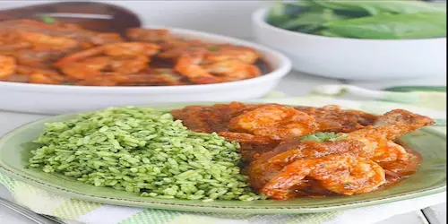

Welcome to Mary's Kitchen
At Mary's Kitchen, we pride ourselves on serving delicious homemade meals made with love and the freshest ingredients. Whether you're craving comfort food or looking for something new, our menu has something for everyone.
Popular Dishes of the Month
Why Choose Mary's Kitchen?
- Fresh, high-quality ingredients
- Variety of dishes to choose from
- Convenient online ordering
- Friendly and fast service
Ready to Taste the Difference?
Explore our menu and place your order today! We can't wait to serve you a delicious meal that feels like home.
View Menu